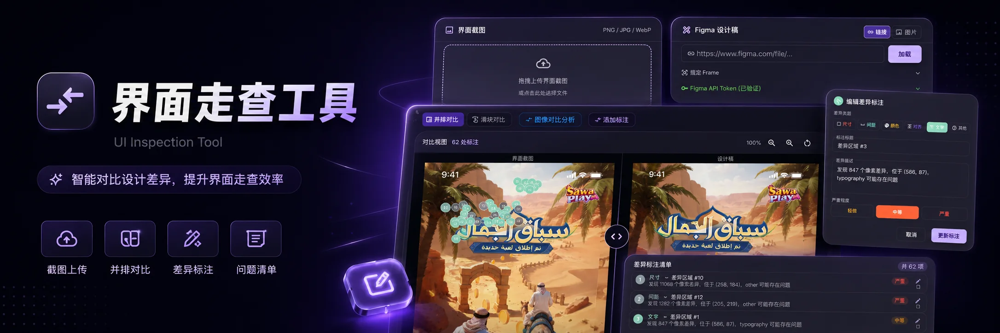
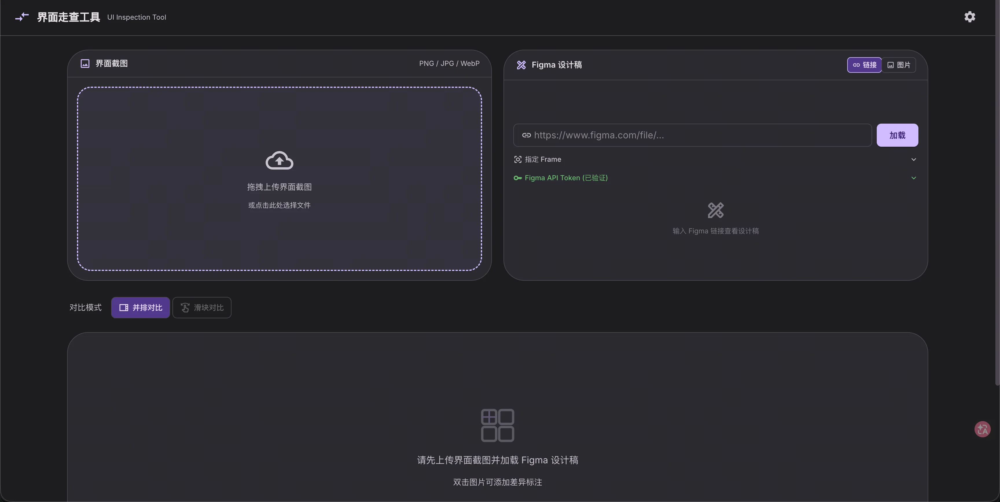
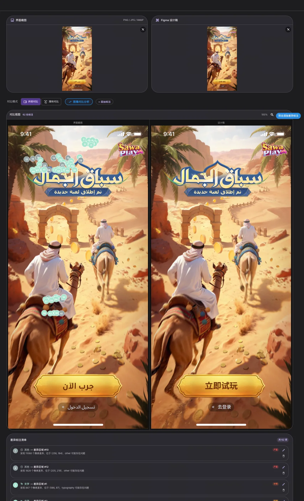
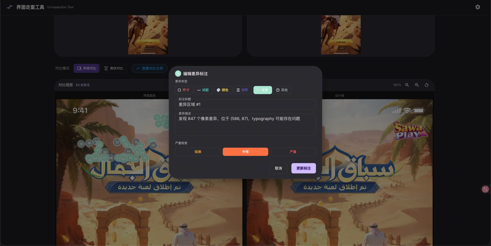

Vibe Coding × Design QA
项目概述
这是一个从日常设计协作问题出发，通过 AI 与工具化方式完成的研发辅助项目。
项目通过导入研发落地截图与 Figma 设计稿，自动识别两者在布局、尺寸、间距、颜色、文字和对齐方式上的差异，并将问题直接标注在对比界面中，帮助研发提前完成设计还原自检，同时降低设计师人工走查、整理问题和反复沟通的成本。
01｜项目背景
在设计稿进入研发阶段后，设计师通常需要对最终落地界面进行逐项检查。
这一过程高度依赖人工观察。设计师需要将研发页面与设计稿并排打开，通过肉眼检查文字、间距、颜色、尺寸、对齐关系和多机型适配效果，再将发现的问题整理成走查报告，反馈给研发进行修改。
对于一个中等规模的需求，设计师往往需要投入一到两天，反复经历：
- 对比研发页面与设计稿；
- 定位细节差异；
- 截图并标注问题；
- 判断问题优先级；
- 整理走查报告；
- 与研发沟通并再次验收。
随着页面数量和适配机型增加，这一流程会持续占用设计师大量精力，也容易因为人工检查疲劳而遗漏问题。
02｜核心问题
项目最初希望解决的并不只是“如何让设计师更快地走查”，而是进一步思考：
能否将设计走查前置，让研发在提交设计验收之前先完成一次自动化自检？
如果研发能够在开发完成后，通过工具快速识别明显的还原问题，就可以在正式提交设计师验收前，先将界面调整到相对完整的状态。
设计师不再需要从大量基础问题开始检查，而是能够将精力集中在更细致的视觉判断、体验问题和复杂场景上。
03｜设计目标
降低人工走查成本
减少设计师逐项观察、截图、标注和撰写报告的重复工作。
提前暴露还原问题
帮助研发在设计验收前发现明显偏差，缩短设计与研发之间的反馈链路。
统一问题表达方式
将界面差异转化为可定位、可分类、可判断优先级的问题清单。
04｜创作过程
从真实工作流程中拆解问题
项目并不是从某个具体功能开始，而是先梳理完整的设计走查流程。
通过复盘日常协作，我将整个过程拆分为四个关键动作：
- 获取研发落地页面；
- 与设计稿进行视觉对比；
- 定位并描述差异；
- 将问题反馈给研发并持续跟进。
其中最耗费时间的部分，是大量重复的视觉比对和问题整理。因此，项目首先聚焦于如何让系统代替人完成初步识别，而不是完全取代设计师的专业判断。
确定最小可行的使用路径
为了降低使用门槛，工具采用了较为直接的输入方式：
- 上传研发落地页面截图；
- 关联或导入 Figma 设计稿；
- 选择需要对比的 Frame；
- 由系统生成差异识别结果。
整个流程不要求研发理解复杂的视觉规范，也不需要额外配置检测规则。用户只需要提供两份视觉结果，就可以开始对比。

建立双视图对比能力
在结果呈现上，我设计了两种主要对比方式：并排对比适合整体浏览，让用户快速判断两个页面在结构、内容和视觉层级上的差异；滑块对比适合局部检查，通过拖动分割线观察同一区域在研发稿与设计稿中的变化。
两种模式分别服务于整体判断和细节检查，使用户不需要频繁切换窗口或手动调整图片位置。
将识别结果转化为可操作的问题
单纯展示两张图片并不能真正提升走查效率，因此项目进一步引入了自动差异识别。
系统通过大模型的图像理解能力，对两份界面进行分析，并尝试识别以下类型的问题：
- 尺寸差异；
- 间距差异；
- 颜色差异；
- 对齐问题；
- 文字与排版问题；
- 其他视觉偏差。
识别结果以编号标记的方式直接覆盖在界面上。用户可以点击标记查看问题类型、所在位置和具体描述，减少在图片与问题清单之间来回查找的成本。

补充人工编辑与优先级判断
考虑到当时 AI 的视觉识别能力仍然有限，系统生成的结果不能完全替代人工判断，因此工具保留了完整的人工修正能力。
设计师或研发可以：
- 新增差异标注；
- 修改问题类型；
- 编辑问题描述；
- 删除无效识别结果；
- 调整问题严重程度。
问题被划分为轻微、中等和严重三个等级，使研发能够优先处理影响较大的还原问题，而不是面对一份没有优先级的长问题列表。
AI 负责完成初步识别，人负责确认、修正和决策。
形成结构化走查清单
所有识别和标注结果会同步生成问题清单，并与界面中的标记一一对应。
相比传统的截图加文字报告，这种结构化方式能够更清晰地展示：
- 问题出现的位置；
- 问题所属类型；
- 差异描述；
- 严重程度；
- 当前处理状态。
工具由此不仅是一个视觉对比页面，也逐渐成为连接设计验收与研发修复的轻量协作载体。
05｜核心功能
输入与加载
支持研发截图上传、Figma 设计稿关联、指定 Frame 加载。
视觉对比
支持并排与滑块对比，帮助用户同时完成整体浏览和局部检查。
AI 差异识别
识别尺寸、间距、颜色、对齐、文字排版等界面还原问题。
问题管理
支持差异区域标记、类型分类、严重程度分级、人工新增与编辑标注。

06｜项目价值
这个项目将原本依赖人工经验的设计走查流程，转化为一个更标准化的工具流程。
07｜项目复盘与后续演进
这是一个相对早期的 AI 工具项目。当时大模型在视觉识别、代码生成和设计上下文理解方面仍存在明显限制，因此项目采用的是“研发完成页面后，再通过工具识别差异”的检测式方案。
现在重新回看，AI 在设计工程化方面已经发生了较大变化。
通过 Figma MCP 与 Claude、Codex 等编码工具，AI 可以直接读取设计稿的结构、样式和组件信息，并参与页面代码生成。项目的目标也不再局限于“研发完成后进行自检”，而是可以进一步演进为：
在开发阶段直接基于 Figma 生成高还原度界面，从源头减少设计稿与研发结果之间的偏差。
因此，目前项目正在从一个“设计还原检测工具”，继续深化为一套覆盖以下流程的智能设计研发系统：
读取设计稿 → 理解设计规范 → 生成页面代码 → 自动运行与截图 → 对比验证 → 自动修正差异
早期版本解决的是如何更快发现问题，而后续版本希望解决的是如何从一开始就减少问题，最终形成从设计到代码、从生成到验证的完整闭环。
项目总结
从 0 到 1 设计界面走查工具，通过研发截图与 Figma 设计稿智能对比，实现差异识别、问题标注和优先级管理，并进一步探索由 AI 直接完成高还原度设计落地。